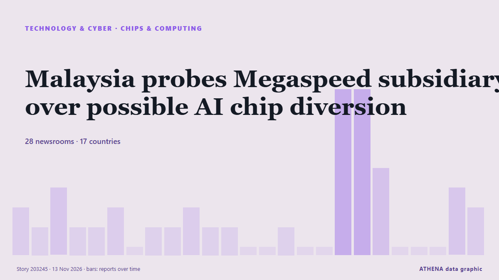

Malaysia probes Megaspeed subsidiary over possible AI chip diversion

Reported independently by 28 outlets in 17 countries since 10 Nov, first by DigiTimes Asia; coverage is at its peak. ATHENA rates the risk elevated (4.2/10), driven mainly by the severity of the harm described and its geographic and sector reach. Confidence is 88% (high), with 28 independent outlets corroborating it and an average source reliability of 71%. Outlets by country: Singapore (12), India (6), Malaysia (4). Coverage: 10 Nov to 13 Nov, 72 hours.
Why it matters: Technology and cyber developments shape security, competition and the rules of digital life.
What changed: 25 new reports from 16 outlets in the 24 hours to 13 Nov.
First reported as: Singapore's top listed firms face climate data gaps a year into mandatory reporting
How to read this page
- What you are reading
- 28 outlets in 17 countries reported this event. The reports below are listed in the order they appeared; each headline opens the original article. ATHENA writes none of the reports.
- Our reading
- For the record — The reports describe a completed, domestic, commercial or personal matter. We list it so you can see who reported it and when. We are not tracking a risk of wider conflict here.
- How much evidence
- Limited Treat this page as an early report.
After repeats, off-topic items and stale reports are removed, 10 of the 40 listed reports are counted; 32% of the headlines match the event.
- What this does not mean
- ATHENA measures how an event is reported, not whether it is true. This is not a forecast, a judgement on who is right, or advice.
- What would change it
- Reports from other independent outlets showing a different development, or a firm confirmation or denial from an official source.
Reading R2 · refreshed with every update of this page. ATHENA has not yet published a track record for these readings; when it does, it will be linked here.
At a glance
Selected, scored and written by ATHENA's published methodology. No editor intervenes in individual events. How this is produced ›
| 10 Nov 03:23 UTC | 2 |
|---|---|
| 10 Nov 06:23 UTC | 1 |
| 10 Nov 09:23 UTC | 3 |
| 10 Nov 12:23 UTC | 1 |
| 10 Nov 15:23 UTC | 1 |
| 10 Nov 18:23 UTC | 2 |
| 10 Nov 21:23 UTC | 0 |
| 11 Nov 00:23 UTC | 1 |
| 11 Nov 03:23 UTC | 1 |
| 11 Nov 06:23 UTC | 2 |
| 11 Nov 09:23 UTC | 1 |
| 11 Nov 12:23 UTC | 1 |
| 11 Nov 15:23 UTC | 0 |
| 11 Nov 18:23 UTC | 0 |
| 11 Nov 21:23 UTC | 1 |
| 12 Nov 00:23 UTC | 0 |
| 12 Nov 03:23 UTC | 0 |
| 12 Nov 06:23 UTC | 8 |
| 12 Nov 09:23 UTC | 8 |
| 12 Nov 12:23 UTC | 4 |
| 12 Nov 15:23 UTC | 0 |
| 12 Nov 18:23 UTC | 0 |
| 12 Nov 21:23 UTC | 0 |
| 13 Nov 00:23 UTC | 3 |
| 13 Nov 03:23 UTC | 2 |
Why these numbers
Importance
Risk
Confidence
The reporting — who reported it, and when
headline as published · opens the original- DigiTimes Asia · TaiwanCommentary: How will US midterms and Jensen Huang controversy reshape AI policy?
- Free Malaysia Today · MalaysiaNo probe yet into M’sian firm linked to Nvidia scandal
- Eco-Business · SingaporeSingapore's top listed firms face climate data gaps a year into mandatory reporting
- Data Center Dynamics · United KingdomEquinix launches SG6 data center in Singapore
- Express Tribune · PakistanNvidia's clubby board faces a sticky 'honey pot' test
- The Business Times · SingaporeNo Malaysian probe yet into Nvidia customer Megaspeed’s unit; firm earlier cited ministry checks
- South China Morning Post · Hong KongAlibaba chip unit T-Head files Hong Kong IPO plan amid China’s AI self-sufficiency drive
- Gulf News · United Arab EmiratesNvidia falls more than 6%, no longer 2nd biggest company by market value
- NDTV · IndiaIn Numbers, How Nvidia Became The King Of AI Compute Capacity
- The Next Web · NetherlandsNvidia says it cut off Megaspeed in 2025, but Bloomberg found later imports
- Sydney Morning Herald · AustraliaHow a celebration in Singapore set the stage for the Nvidia spy scandal
- DigiTimes Asia · TaiwanAlibaba files to spin off chip design unit T-Head for Hong Kong IPO
- CNA (Channel NewsAsia) · SingaporeFintech firm Airwallex to invest S$2 billion in Singapore, create around 250 jobs over five years
- The Business Times · SingaporeAirwallex to invest more than S$2 billion in Singapore, grow headcount here to over 1,000
- Law.com · United StatesSingapore Chip Supplier Megaspeed Faces Scrutiny as Nvidia Scandal Widens
- The Business Times · SingaporeFewer Singapore firms plan job cuts, but skills mismatch a growing concern: AmCham survey
- The Business Times · SingaporeSingapore cannot afford to let bad actors trade on its trust
- The National · United Arab EmiratesRussia-Ukraine prisoner swap, Nvidia CEO Huang's second affair and Ras Al Khaimah beaches reopen
- New Straits Times · MalaysiaMegaspeed's links to rural Australian store raise fresh questions in Nvidia scandal
- NDTV · IndiaHow Nvidia Spy Scandal Exposes Singapore's Role In Advanced AI Chips Trade
- The Business Times · SingaporeChinese AI firms rush to secure Nvidia chip capacity as spy scandal stirs fear of US curbs
- Moneyweb · South AfricaAMD, Broadcom, Alphabet poised to gain from Nvidia scandal
- NDTV · IndiaSpy Row Fallout Makes Chinese AI Firms Rush To Secure Nvidia Chip Capacity
- FXStreet · SpainGlobal equities: Nvidia turmoil raises chip and AI risks – Rabobank
- The Business Times · SingaporeThere has never been a corporate scandal like the Huang affair
- Indian Express · India‘Not one spy girl sent my way’: Telegram’s Pavel Durov amid Nvidia China ‘spy’ row
- CBC News (alternative feed) · CanadaHow China gets around the U.S. ban on Nvidia chips
- NBC News (World) · United StatesMegaspeed, chip firm at center of Nvidia scandal, pledges to cooperate with U.S. investigation
- The Irish News (Belfast) · United KingdomFirm central to Nvidia chief’s affair scandal pledges to cooperate with US probe
- The Business Times · SingaporeSouth-east Asia has lost Nvidia’s best salesman
- Times of India · IndiaChinese 'spy' Alice's husband introduced her to Nvidia CEO, flaunted ties to clients
- Indian Express · IndiaJensen Huang episode illustrates the newest instance of a decades-old strategy
- New Straits Times · MalaysiaChinese AI firms rush to secure Nvidia chip capacity as spy scandal stirs fear of US curbs
- New York Times Business · United StatesWall Street Sees the Writing on the Wall for Jensen Huang
- New Straits Times · MalaysiaFive things to know about Nvidia
- The Business Times · SingaporeSingapore bars Alice Huang, woman tied to affair with Nvidia’s Jensen Huang, for misleading police
- Al Jazeera English · QatarTrump heads to China amid Nvidia scandal: Will he get tougher on Beijing?
- Fortune · United StatesNvidia abruptly changed how it reported revenue in Singapore last year, adding to questions about its relationship with Megaspeed
- The Business Times · SingaporeAlibaba-Megaspeed financing link traced via Singapore, Malaysia units amid Nvidia chip scrutiny
- The Business Times · SingaporeMan handed 41 charges in relation to Nvidia chips case in Singapore